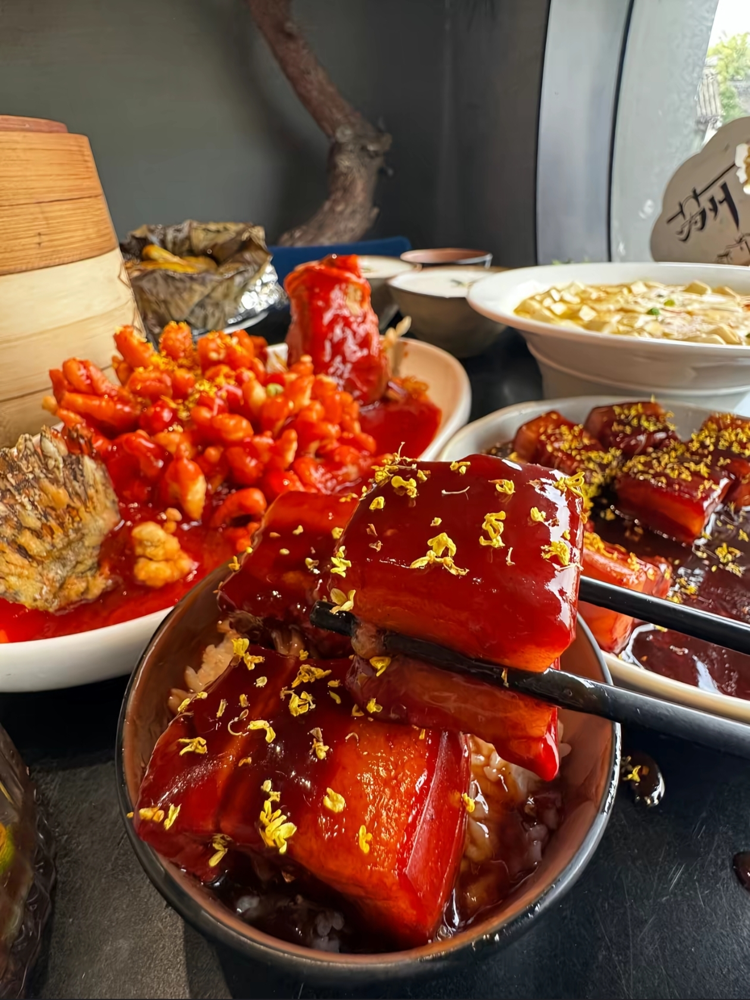
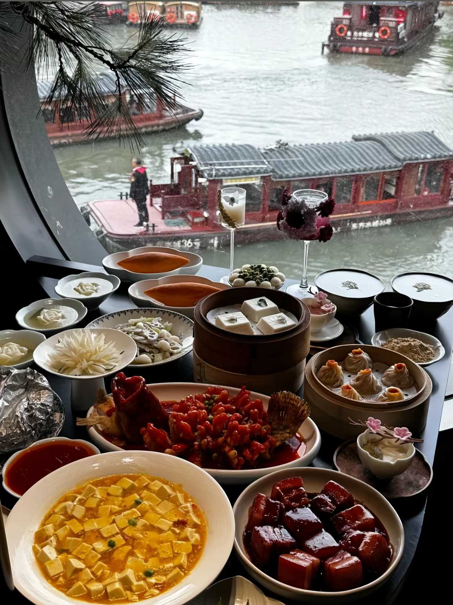
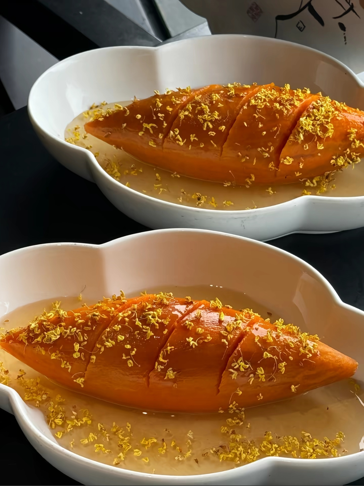
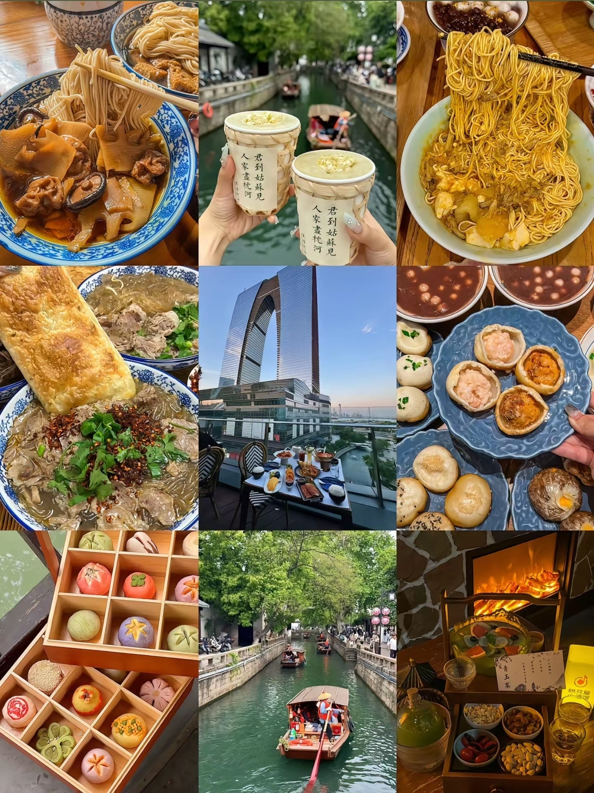
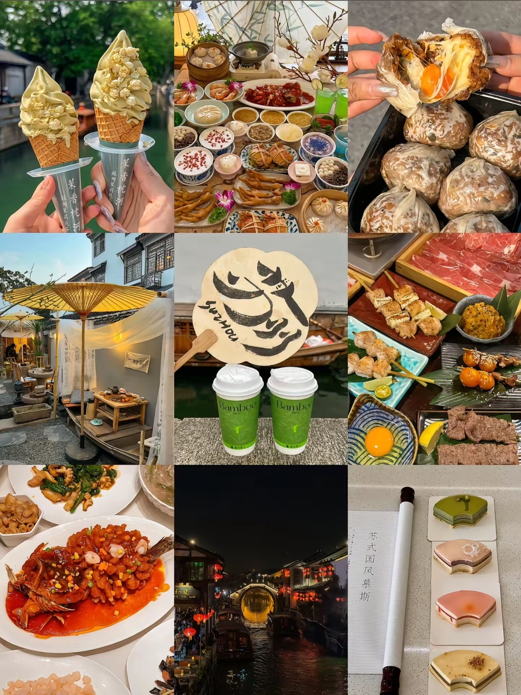

苏式饮食甜鲜清淡、讲究时令，菜品软糯鲜甜，河鲜时令菜肴层出不穷，平江路、山塘街遍布各色烟火小店，舌尖尽是江南风味。

1.松鼠桂鱼：苏菜招牌，鱼肉改刀炸至蓬松，裹上酸甜浓汁，外酥里嫩，宴席必备。
2.桂花红烧肉：大块五花肉慢炖入味，淋上桂花蜜，肥而不腻，酱香浓郁。
3.响油鳝糊：出锅后浇上热油，鳝丝软滑鲜嫩，蒜香扑鼻，下饭神器。
4.藏书羊肉：秋冬时令硬菜，白汤羊肉暖而无膻，冬日暖胃首选。

临水而食是苏州独有的用餐体验，窗边游船缓缓划过，桌上摆满各式时令河鲜、精致冷盘与特色热菜。
荤素搭配清淡鲜甜，兼顾颜值与口感，出游聚餐首选，沉浸式感受江南水乡吃饭氛围感。

秃黄油专为秋季螃蟹上市打造，只用纯蟹黄、蟹膏熬制，无一丝蟹肉，色泽金黄油润。拌面之后香气浓郁，入口绵密醇厚，蟹鲜味直击味蕾，是面食中的高端时令美味，适合喜爱蟹味的游客。搭配姜丝可以中和油腻，口感更佳。

奥灶面起源昆山，拥有百年历史，属于江南非遗面食。分红汤、白汤两大汤底，红汤醇厚香甜，经典浇头为爆鱼、卤焖肉；白汤清爽清淡。面条选用特制水面，久煮不烂，大街小巷老字号随处可见，平价又地道，是本地人日常早餐首选。

1.桂花冰淇淋：苏州限定文创冷饮，淡淡桂花香，逛老街拍照出圈必备。
2.爆浆蟹黄生煎：外皮松软，内馅汤汁浓郁，掰开爆汁，街边人气小吃。
3.苏式国风慕斯：造型雅致，复刻园林窗棂、荷叶造型，清甜不腻。
4.松鼠桂鱼小份快餐：单人出游可尝，浓缩苏帮菜招牌风味。
老字号推荐：松鹤楼、得月楼主打苏帮本帮菜；裕兴记、同得兴是苏式面老字号；七里山塘、平江路沿街可以品尝各类水乡小吃。
口味小提示：苏州整体口味偏清甜，不喜甜味可以提前告知店家少放糖。